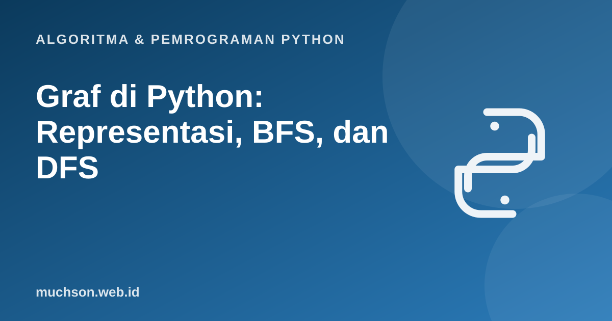

Beranda › Artikel › Algoritma & Pemrograman Python
Algoritma & Pemrograman PythonGraf di Python: Representasi, BFS, dan DFS
Peta jalan, jaringan pertemanan, hubungan antar halaman web, dan jadwal kuliah dengan prasyarat semuanya adalah graf. Dua algoritma penjelajahan, BFS dan DFS, menjadi dasar hampir semua algoritma graf lanjutan. Materi ini menunjukkan keduanya bekerja langkah demi langkah, lalu memakainya menyelesaikan masalah nyata.
Sebaiknya sudah paham: stack dan queue, dictionary dan set, rekursi

Tujuan belajar
Setelah membaca dan mencoba materi ini, Anda mampu:
- menjelaskan simpul, sisi, graf berarah dan tak berarah
- membandingkan matriks dan daftar ketetanggaan serta memilih yang tepat
- mengimplementasikan BFS dan DFS (rekursif dan iteratif)
- mencari jalur terpendek pada graf tak berbobot dengan BFS
- menghitung komponen terhubung
- menganalisis kompleksitas O(V + E)
Istilah dasar
Representasi: matriks vs daftar ketetanggaan
graf = {
"A": ["B", "C"],
"B": ["A", "D", "E"],
"C": ["A", "E"],
"D": ["B", "F"],
"E": ["B", "C", "F"],
"F": ["D", "E"],
}
# matriks ketetanggaan untuk graf yang sama
simpul = sorted(graf)
matriks = [[1 if v in graf[u] else 0 for v in simpul] for u in simpul]
print(" ", *simpul)
for u, baris in zip(simpul, matriks):
print(u, " ", *baris)
print("jumlah sisi:", sum(len(t) for t in graf.values()) // 2) A B C D E F
A 0 1 1 0 0 0
B 1 0 0 1 1 0
C 1 0 0 0 1 0
D 0 1 0 0 0 1
E 0 1 1 0 0 1
F 0 0 0 1 1 0
jumlah sisi: 7
| Aspek | Daftar ketetanggaan | Matriks ketetanggaan |
|---|---|---|
| Memori | O(V + E) | O(V²) |
| Cek sisi u–v | O(derajat u) | O(1) |
| Daftar tetangga u | O(derajat u) | O(V) |
| Cocok untuk | Graf jarang (sedikit sisi), kasus umum | Graf padat, cek sisi sangat sering |
Penjelajahan langkah demi langkah
BFS: lapis demi lapis dengan antrean
from collections import deque
def bfs(graf, mulai):
dikunjungi, urutan = {mulai}, []
antre = deque([mulai])
while antre:
u = antre.popleft()
urutan.append(u)
for v in sorted(graf[u]):
if v not in dikunjungi:
dikunjungi.add(v) # tandai saat dimasukkan agar tidak masuk dua kali
antre.append(v)
return urutan
print(bfs(graf, "A"))['A', 'B', 'C', 'D', 'E', 'F']
DFS: menyelam dulu dengan rekursi atau tumpukan
def dfs_rekursif(graf, u, dikunjungi=None, urutan=None):
dikunjungi = dikunjungi if dikunjungi is not None else set()
urutan = urutan if urutan is not None else []
dikunjungi.add(u); urutan.append(u)
for v in sorted(graf[u]):
if v not in dikunjungi:
dfs_rekursif(graf, v, dikunjungi, urutan)
return urutan
def dfs_iteratif(graf, mulai):
dikunjungi, urutan, tumpuk = set(), [], [mulai]
while tumpuk:
u = tumpuk.pop()
if u in dikunjungi:
continue
dikunjungi.add(u); urutan.append(u)
for v in sorted(graf[u], reverse=True): # dibalik agar yang kecil diproses lebih dulu
if v not in dikunjungi:
tumpuk.append(v)
return urutan
print(dfs_rekursif(graf, "A"))
print(dfs_iteratif(graf, "A"))['A', 'B', 'D', 'F', 'E', 'C']
['A', 'B', 'D', 'F', 'E', 'C']
Jalur terpendek dengan BFS
from collections import deque
def jalur_terpendek(graf, asal, tujuan):
induk = {asal: None}
antre = deque([asal])
while antre:
u = antre.popleft()
if u == tujuan:
break
for v in sorted(graf[u]):
if v not in induk:
induk[v] = u
antre.append(v)
if tujuan not in induk:
return None
jalur, x = [], tujuan
while x is not None: # susun mundur dari tujuan lewat induk
jalur.append(x); x = induk[x]
return jalur[::-1]
print(jalur_terpendek(graf, "A", "F")) # 3 sisi: A-B-D-F
print(jalur_terpendek(graf, "C", "D"))['A', 'B', 'D', 'F']
['C', 'A', 'B', 'D']
Komponen terhubung
def komponen(graf):
terlihat, hasil = set(), []
for s in sorted(graf):
if s not in terlihat:
grup = dfs_rekursif(graf, s) # semua yang terjangkau dari s
terlihat.update(grup)
hasil.append(sorted(grup))
return hasil
g2 = {"A": ["B"], "B": ["A"], "C": ["D"], "D": ["C"], "E": []}
print(komponen(g2)) # tiga kelompok terpisah
print(len(komponen(graf))) # graf utama: satu kelompok[['A', 'B'], ['C', 'D'], ['E']]
1
Kompleksitas
Baik BFS maupun DFS mengunjungi tiap simpul sekali dan memeriksa tiap sisi sekali (dua kali pada graf tak berarah), sehingga waktunya O(V + E) dengan daftar ketetanggaan. Dengan matriks, waktunya O(V²).
Latihan mandiriCoba kerjakan dulu sebelum membuka jawaban.
1. Pada graf contoh, tuliskan urutan BFS dari F (tetangga diurutkan abjad).
F; tetangga D, E; lalu dari D: B; dari E: B (sudah), C; hasil: F, D, E, B, C, A.
2. Berapa jumlah sisi pada graf lengkap dengan 6 simpul? Berapa elemen matriksnya yang bernilai 1?
Sisi = 6×5/2 = 15. Pada matriks, setiap sisi muncul dua kali: 30 elemen bernilai 1.
3. Ubah bfs agar menghitung jarak (jumlah sisi) tiap simpul dari awal.
Simpan dict jarak:
jarak = {mulai: 0}, dan saat menemukan v dari u: jarak[v] = jarak[u] + 1.4. Bagaimana mendeteksi apakah graf tak berarah memiliki siklus dengan DFS?
Saat menjelajah dari u ke v, bila v sudah dikunjungi dan bukan induk u, berarti ada siklus.
Ringkasan
- Graf: simpul dan sisi; representasi daftar ketetanggaan hemat untuk graf jarang.
- BFS (antrean) menjelajah per lapisan dan menemukan jalur terpendek tak berbobot.
- DFS (tumpukan atau rekursi) menyelam dalam; berguna untuk siklus, komponen, dan backtracking.
- Keduanya O(V + E); tandai simpul yang sudah dikunjungi.
Tanya jawab
Bagaimana dengan graf berbobot?
BFS tidak cukup. Gunakan algoritma Dijkstra (bobot tak negatif) dengan priority queue, atau Bellman-Ford bila ada bobot negatif.
Apa itu pengurutan topologis?
Mengurutkan simpul graf berarah tanpa siklus (DAG) agar setiap sisi mengarah ke depan, misalnya urutan mengambil mata kuliah berprasyarat. Dapat dilakukan dengan DFS.
Mengapa DFS rekursif bisa gagal pada graf besar?
Python membatasi kedalaman rekursi (bawaan sekitar 1000). Pakai versi iteratif dengan tumpukan eksplisit.
Referensi
- Cormen, Leiserson, Rivest, Stein, Introduction to Algorithms (edisi ke-4, MIT Press, 2022)
- Robert Sedgewick dan Kevin Wayne, Algorithms (edisi ke-4), materi pendamping algs4.cs.princeton.edu
- MIT OpenCourseWare 6.006: Introduction to Algorithms
- Dokumentasi Python: Design and History FAQ, why must self be explicit (konteks pemodelan data), lihat juga collections
- Python.org: Python Patterns, Implementing Graphs (essay klasik Guido van Rossum)